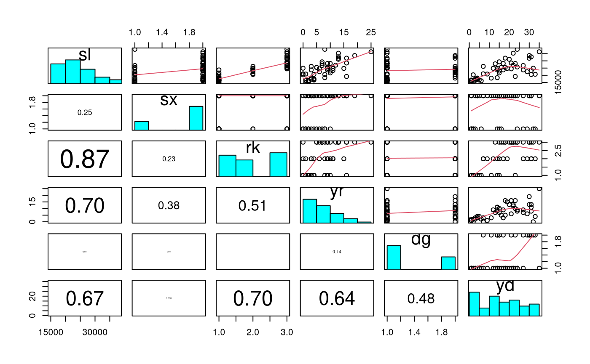
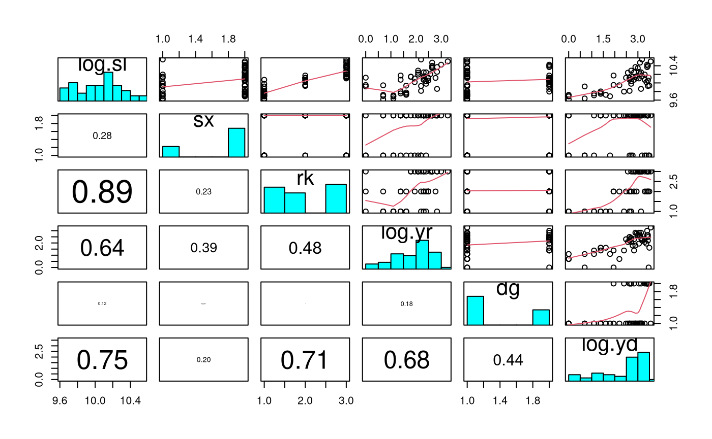
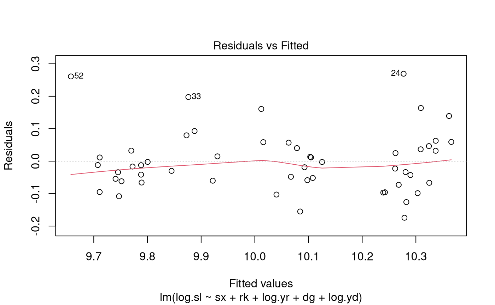
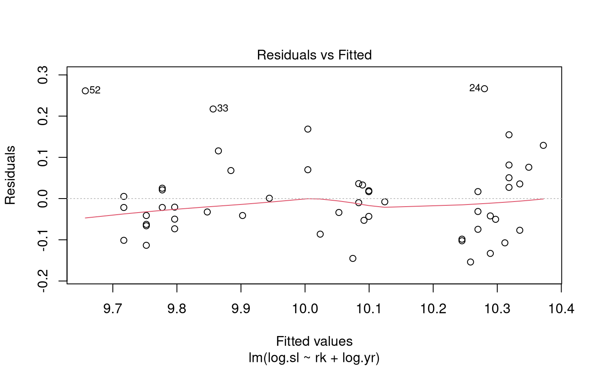
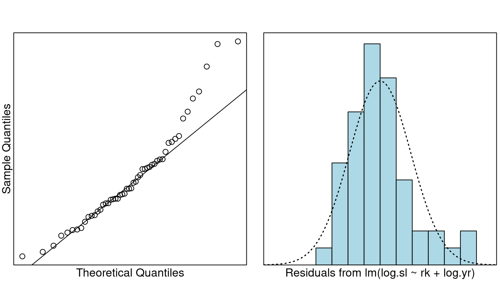

Problem
These are the salary data used in Weisberg’s book consisting of observations on six variables for 52 professors in a small college. We want to build a model to predict salary. Of particular interest was the effect (if any) of gender on salary.
The variables of interest were:
-
sx: Sex, (female or male) -
rk: Rank, (assistant, associate or full) -
yr: Number of years in current rank -
dg: Highest degree (masters or doctorate) -
yd: Number of years since highest degree was earned, -
sl: Academic year salary, in dollars.
Question of Interest
We want to build a model to explain salary. In particular, the effect (if any) of gender on salary.
Read in and Inspect the Data
salary.df = read.table("salary.txt", header = TRUE)
salary.df$sx = factor(salary.df$sx)
salary.df$dg = factor(salary.df$dg)
salary.df$rk = factor(salary.df$rk)
head(salary.df)
tail(salary.df)
pairs20x(salary.df[, c("sl", "sx", "rk", "yr", "dg", "yd")])## sx rk yr dg yd sl
## 1 male full 25 doctorate 35 36350
## 2 male full 13 doctorate 22 35350
## 3 male full 10 doctorate 23 28200
## 4 female full 7 doctorate 27 26775
## 5 male full 19 masters 30 33696
## 6 male full 16 doctorate 21 28516## sx rk yr dg yd sl
## 47 female assistant 2 doctorate 6 16150
## 48 female assistant 2 doctorate 2 15350
## 49 male assistant 1 doctorate 1 16244
## 50 female assistant 1 doctorate 1 16686
## 51 female assistant 1 doctorate 1 15000
## 52 female assistant 0 doctorate 2 20300
It seems that males have a larger mean sl than females.
The higher the rank, the higher the sl (Note that the
levels of rk are in alphabetical order). As yr
increases the expected sl increases. Not too much going on
in the relationship between sl and dg. There
is a weak positive relationship between sl and
yd. Also, as yd increases the variability in
sl increases.
Since the response variable is salary, it would make sense to use
log-salary so that effects will be multiplicative. Some previous
analyses have also used log(yr) and log(yd) as
explanatory variables. It is not obvious that this is the best choice,
but for consistency we will follow these previous analyses.
salary.df$log.yr = log(salary.df$yr + 1) # log(yr + 1) since log(0) = -infinity
salary.df$log.yd = log(salary.df$yd)
salary.df$log.sl = log(salary.df$sl)
pairs20x(salary.df[, c("log.sl", "sx", "rk", "log.yr", "dg", "log.yd")])
It seems that males have a larger meanlog(sl) than
females. The higher the rank, the higher the log(sl). As
log(yr) increases the expected log(sl)
increases. However, the low log(sl)s do not follow this
observed trend. Still not too much going on in the relationship between
log(sl) and dg. There is a weak positive
relationship between log(sl) and log(yd).
Also, as log(yd) increases the variability in
log(sl) increases. In comparison to sl and
yd, there is some improvement.
We’ll find our preferred model by fitting all terms, and then successively removing the one that is least significant, until all remaining terms are significant.
Model Building and Check Assumptions
salary.fit = lm(log.sl ~ sx + rk + log.yr + dg + log.yd, data = salary.df)
plot(salary.fit, which = 1)
summary(salary.fit)##
## Call:
## lm(formula = log.sl ~ sx + rk + log.yr + dg + log.yd, data = salary.df)
##
## Residuals:
## Min 1Q Median 3Q Max
## -0.17438 -0.06067 -0.01456 0.04168 0.26938
##
## Coefficients:
## Estimate Std. Error t value Pr(>|t|)
## (Intercept) 9.654427 0.043548 221.698 < 2e-16 ***
## sxmale -0.003494 0.036384 -0.096 0.923914
## rkassociate 0.213574 0.050898 4.196 0.000126 ***
## rkfull 0.429959 0.056213 7.649 1.12e-09 ***
## log.yr 0.081603 0.027493 2.968 0.004787 **
## dgmasters 0.026184 0.039074 0.670 0.506203
## log.yd 0.004235 0.031797 0.133 0.894646
## ---
## Signif. codes: 0 '***' 0.001 '**' 0.01 '*' 0.05 '.' 0.1 ' ' 1
##
## Residual standard error: 0.1012 on 45 degrees of freedom
## Multiple R-squared: 0.8528, Adjusted R-squared: 0.8332
## F-statistic: 43.46 on 6 and 45 DF, p-value: < 2.2e-16##
## Call:
## lm(formula = log.sl ~ rk + log.yr + dg + log.yd, data = salary.df)
##
## Residuals:
## Min 1Q Median 3Q Max
## -0.17515 -0.06095 -0.01423 0.04172 0.27191
##
## Coefficients:
## Estimate Std. Error t value Pr(>|t|)
## (Intercept) 9.652977 0.040407 238.892 < 2e-16 ***
## rkassociate 0.212025 0.047750 4.440 5.59e-05 ***
## rkfull 0.428683 0.054027 7.935 3.69e-10 ***
## log.yr 0.080503 0.024722 3.256 0.00212 **
## dgmasters 0.025820 0.038468 0.671 0.50545
## log.yd 0.005058 0.030286 0.167 0.86809
## ---
## Signif. codes: 0 '***' 0.001 '**' 0.01 '*' 0.05 '.' 0.1 ' ' 1
##
## Residual standard error: 0.1001 on 46 degrees of freedom
## Multiple R-squared: 0.8528, Adjusted R-squared: 0.8368
## F-statistic: 53.3 on 5 and 46 DF, p-value: < 2.2e-16##
## Call:
## lm(formula = log.sl ~ rk + log.yr + dg, data = salary.df)
##
## Residuals:
## Min 1Q Median 3Q Max
## -0.17723 -0.06084 -0.01646 0.04136 0.27343
##
## Coefficients:
## Estimate Std. Error t value Pr(>|t|)
## (Intercept) 9.65585 0.03618 266.856 < 2e-16 ***
## rkassociate 0.21669 0.03832 5.655 8.92e-07 ***
## rkfull 0.43522 0.03686 11.807 1.16e-15 ***
## log.yr 0.08284 0.02015 4.111 0.000157 ***
## dgmasters 0.02934 0.03186 0.921 0.361820
## ---
## Signif. codes: 0 '***' 0.001 '**' 0.01 '*' 0.05 '.' 0.1 ' ' 1
##
## Residual standard error: 0.09902 on 47 degrees of freedom
## Multiple R-squared: 0.8527, Adjusted R-squared: 0.8402
## F-statistic: 68.02 on 4 and 47 DF, p-value: < 2.2e-16##
## Call:
## lm(formula = log.sl ~ rk + log.yr, data = salary.df)
##
## Residuals:
## Min 1Q Median 3Q Max
## -0.15389 -0.06344 -0.02122 0.03568 0.26648
##
## Coefficients:
## Estimate Std. Error t value Pr(>|t|)
## (Intercept) 9.65710 0.03610 267.503 < 2e-16 ***
## rkassociate 0.22719 0.03653 6.220 1.16e-07 ***
## rkfull 0.43264 0.03670 11.789 8.85e-16 ***
## log.yr 0.08661 0.01970 4.396 6.08e-05 ***
## ---
## Signif. codes: 0 '***' 0.001 '**' 0.01 '*' 0.05 '.' 0.1 ' ' 1
##
## Residual standard error: 0.09886 on 48 degrees of freedom
## Multiple R-squared: 0.85, Adjusted R-squared: 0.8407
## F-statistic: 90.7 on 3 and 48 DF, p-value: < 2.2e-16
plot(salary.fit4, which = 1)
normcheck(salary.fit4)
cooks20x(salary.fit4)## 2.5 % 97.5 %
## (Intercept) 14537.893426 16809.266030
## rkassociate 1.166196 1.350709
## rkfull 1.431690 1.659352
## log.yr 1.048118 1.134534Get log.yr Effect for Doubling of Time at Current
Rrank
2^confint(salary.fit4)[4, ]## 2.5 % 97.5 %
## 1.033112 1.091432Method and Assumption Checks
We have a numeric response and multiple explanatory variables, so we fitted a multiple linear regression model. After looking at pairwise plots, salary and the two year explanatory variables were logged.
After fitting all explanatory terms, Occam’s razor was applied to remove those that were not significant. We dropped the variables in the following order:
-
sx(P-value = 0.92). -
log(yd)(P-value = 0.87). -
dg(P-value = 0.36).
All model assumptions looked reasonably well satisfied, notwithstanding that the residuals were a bit right skewed.
Our final model is where . Here and are equal to 1 if rank is associate or full, respectively, otherwise they are zero.
Our model explains about 85% of the variability in the log of salary.
Executive Summary
We wanted to build a model to explain salary. In particular, the effect (if any) of gender on salary.
Our final model used the rank of the professor and the number of years at the current rank to explain their salary. After adjusting for these, gender, highest degree, and number of years since highest degree was earned were not required.
We estimate that being promoted from assistant to associate professor increases median salary by between 17% and 35%.
We estimate that being promoted from assistant to full professor increases median salary by between 43% and 66%.
We estimate that a doubling in years (at current rank) increases median salary by between 3.3% and 9.1%.
It appears that after adjusting for these in our model variables the effect of gender is not significant, however other question may need to be asked about why so few females are in senior academic positions in the first place – it could be argued that more work needs to be done to determine the cause of the “gender gap”.
Addendum - what happened to the gender gap?
In a regression by itself (i.e., two sample t-test), we can show that gender is marginally significant — what could be driving this apparent effect?
table(salary.df$rk, salary.df$sx)##
## female male
## assistant 8 10
## associate 2 12
## full 4 16
table(salary.df$dg, salary.df$sx)##
## female male
## doctorate 10 24
## masters 4 14To really understand what is going on, we need to ask why there are so few females in the higher professorial ranks (relative to males).
Exercises
Perform a two-sample t-test using only sex as the explanatory factor variable (this confirms that sex is marginally statistically significant if no other explanatories are included in the model.)
Redo the analysis using forward selection (as in the Chapter notes). That is, build the model up by adding the most relevant terms in succession (provided they are significant). Do you end up with the same final model?
Redo the analysis but using
yrandydrather thanlog(yr)andlog(yd). Does this make any meaningful difference?